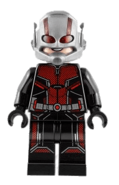

Transition
Tranzicija - elemento būsenos kitimas.
Tranzicijos nustatymai
- transition-property - nurodai koks stilius keičiasi pagal kitus tranzicijos nustatymus
- transition-duration - per kiek laiko vykdoma tranzicija
- transition-timing-function - nurodai laiko ir kitimo funkciją (ease, ease-in, ease-out, ease-in-out, linear...)
- transition-delay - po kiek laiko pradės vykdyti tranziciją
- transition - nurodai visus tranzicijos stilius (svarbu duration nurodyti ankščiau negu delay)
Tranzicijos veiksmas/ai nurodomi CSS'e naudojant :hover, :focus, :active... efektą.
Pirmasis yay
Animation
Elemento kitimas per keletą žingsnių.
Animacijos nustatymai
- animation-duration - kiek laiko užtruks animacija
- animation-timing-function - nurodai laiko ir kitimo funkciją (ease, ease-in, ease-out, ease-in-out, linear...)
- animation-delay - po kiek laiko prasidės animacija
- animation-iteration-count - kiek sykių vyks animacija
- animation-direction - animacijos kryptis (normal(default), reverse, alternate, alternate-reverse)
- animation-fill-mode - kaip animuotas elementas elgiasi prieš animaciją ir po animacijos
- animation-play-state - ar animacija vykdoma
- animation-name - animacijos vardas (susigalvotas)
- animation - nurodai visus animacijos stilius (svarbu duration nurodyti ankščiau negu delay)
Animacijos veiksmai nurodomi naudojant @keyframes (daugelį būsenų). Kiekvienas keyframe'as (būsena) yra nurodoma % dalimi.
Animate ME!

Transform
- rotate - rotuoja elementą nurodytoje ašyje (matavimo vienetai laipsniai(deg/rad))
- translate - pozicijos kitimas (matavimo vienetai px)
- scale - dydžio kitimas (matavimo vienetai skaičiais (tarsi dauginti))
- skew - iškraipo elementą (tarsi tampytų už kampų) (matavimo vienetai laipsniai(deg/rad))
Responsive CSS and MobileFirst principais
Responsive CSS'as rašomas @media ribose.
Mobile first principas, nes lengviau nuo mažo ekrano judėti link didelio IR mobiliųjų vartotojų yra daugiau ir jų kiekis auga sparčiau.